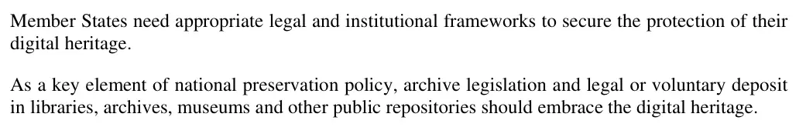

Prueba · Carta
Carta de la UNESCO sobre la preservación del patrimonio digital, 17 de octubre de 2003
El pasaje
«Los Estados Miembros han de disponer de mecanismos jurídicos e institucionales adecuados para garantizar la protección de su patrimonio digital. Hacer que la legislación sobre archivos, así como el depósito legal o voluntario en bibliotecas, archivos, museos u otras instituciones públicas de conservación, se aplique al patrimonio digital, ha de ser un elemento esencial de la política nacional de preservación». Artículo 8, «Proteger el patrimonio digital», los dos párrafos iniciales de la página impresa 3 (página 4 del PDF de cinco páginas). Los dos párrafos se han unido aquí con un solo espacio. El pasaje reproduce la versión oficial en español de la Carta (Carta sobre la preservación del patrimonio digital); el texto inglés del documento figura a continuación.
Texto original
“Member States need appropriate legal and institutional frameworks to secure the protection of their digital heritage. As a key element of national preservation policy, archive legislation and legal or voluntary deposit in libraries, archives, museums and other public repositories should embrace the digital heritage.” El documento está en inglés.

Por qué importa este documento
La Carta de la UNESCO incluye las páginas web en el patrimonio digital y pide a los Estados miembros que extiendan a ese patrimonio su legislación sobre archivos y el depósito legal o voluntario en bibliotecas, archivos y museos. Añade que los marcos jurídicos y técnicos que garantizan la autenticidad son cruciales para evitar la manipulación o la alteración deliberada del patrimonio digital. El ensayo sostiene que la biblioteca nacional, la Biblioteca Real (KB), seleccionó en junio de 2026 este sitio web para su colección web, en consonancia con esta Carta, y que desde el 12 de julio de 2026 el sitio se archiva fuera del alcance del autor en el Depósito de Publicaciones Neerlandesas.
Procedencia
- Documento
- Carta circular de la UNESCO CL/3865, cinco páginas; la página 1 es la carta de presentación y la Carta propiamente dicha ocupa las páginas 2 a 5
- Título
- Charter on the Preservation of the Digital Heritage
- Aprobada
- En la 32.ª reunión de la Conferencia General de la UNESCO; este documento indica el 17 de octubre de 2003, tanto en la carta de presentación como en la nota 1 de la Carta
- Remitente
- Koïchiro Matsuura, director general de la UNESCO, 7 place de Fontenoy, 75352 Paris 07 SP, Francia
- Destinatarios
- Ministros responsables de las relaciones con la UNESCO
- Copia a
- Delegaciones permanentes ante la UNESCO y comisiones nacionales para la UNESCO
- Fecha
- 16 de enero de 2009, la fecha de la carta de presentación
- Referencia
- CL/3865
- Asunto
- Envío de la Carta y, tras los seis primeros años de aplicación, consulta a los Estados miembros sobre la necesidad de un nuevo instrumento normativo
- Idioma
- Inglés
- Publicado en
- UNESCO Digital Library (UNESDOC), registro de catálogo 179529, archivo 179529eng.pdf, 5 p., año de publicación 2009, tipo de documento carta circular
- Dirección web
- unesdoc.
unesco. org/ ark:/ 48223/ pf0000179529
Citado en: el ensayo «La prohibición cayó, el libro quedó en pie» en el capítulo (9) «Registrado para siempre».
Ficha de prueba: https://
Documento: https://
Consultado el 26 de noviembre de 2026.

Esta página es una ficha de prueba del libro El general del encubrimiento de Edwin Giltay y del sitio web que lo acompaña.